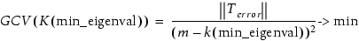

Generates a best-fit VT5 model, using an existing resist model, called the nominal model, as a template defining the model form (number of parameters, etc.).
vt5gen -mode {th | bias | offset} -data samdata -in template -out vt5out -ss ssfile [-l layout]
[-xcheck {0 | 1}]
A required argument to specify the optimization mode.
In th mode it will fit the threshold polynomial.
In the bias mode it will fit the bias polynomial.
In the offset mode it will optimize the epeBias and threshold polynomial. This requires the use of the -ss ssfile and -l layout parameters.
A required input file supplying the image shape parameters (IMAX, SLOPE, ISLOPE, IMIN, and FACTOR), densities (if the model requires), empirical and model thresholds, and measured and simulated EPEs. This file must be in the Sample Data File format. You can generate it using either cdsample or samlinev2.
A required argument, specifying a template input model to use for choosing parameters for output model. If not set, vt5gen reads the VT5 from the setup file.
A required keyword and value pair defining the pathname for the model generated by this command.
An optional keyword and value pair defining the pathname for a Sample Spreadsheet File Format file. If present, the software uses then weights defined in this file give different optimization weightings to specific sample points.
An optional layout handle to run the model generation on. If not specified, the current layout is used.
An optional argument specifying whether to run (1) or not to run (0) the cross-check procedure to determine the best min_eigenvalue criterion to build the model. The cross-check procedure uses a generalized cross-validation criterion (GCV), which is a one-out cross-validation, also known as N-1 fold validation.
GCV is based on the philosophy that if an arbitrary measurement is left out, a model should predict this observation well. GCV optimization is also known as a “predictive sum of squares” (PRESS) in statistics theory. It can be written as:

where:
||Terror|| is a Euclidean norm of the modeling threshold error
m is the number of measurements
k is the number of retained eigenvectors (this number increases as min_eigenvalue decreases)
It is assumed that the template resist model and the resist model used to create the samdata file have the same resist model options.
Setting the environment variable WB_PRINT_MODEL causes Calibre WORKbench to write the eigenvalues to the file u.txt. This is for advanced users to use in possible principal component analysis.
The minimum eigenvalue criterion is printed in the terminal window during the model building step. This number is determined by finding the result of the smallest eigenvalue divided by the largest (SV0). You use the minimum eigenvalue criterion to exclude the next smallest eigenvector.
The minimum eigenvalue is computed when the calculated eigenvalue comes out smaller than 0.001.
% setenv WB_PRINT_MODEL 1
% vt5gen -data samdata.txt -in vt5in.mod -out vt5out.mod -ss sample.ssIf the resulting terms in vt5out.mod are as follows:
TPAR IMAX IMIN
ttermCount 4
TTERM 0.304233
TTERM -0.1 IMAX 1
TTERM 0.022 IMAX 2
TTERM -0.022 IMIN 1then the columns of the matrix U, written to u.txt, correspond to the coefficients in front of the modeling terms starting from the second term. (The first column of U corresponds to the IMAX term, the second column corresponds to the IMAX2 term, and the third column corresponds to the IMIN term.)